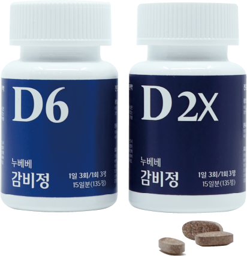
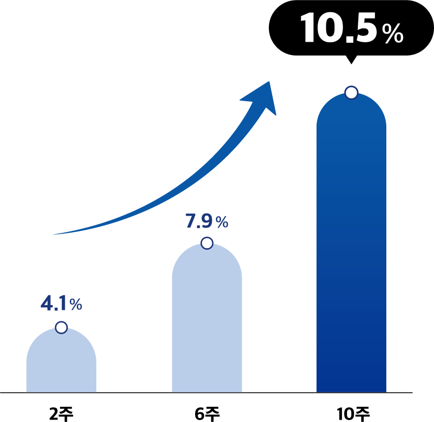
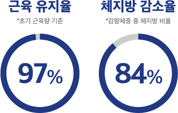
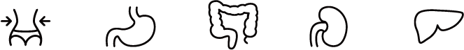
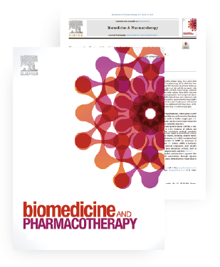
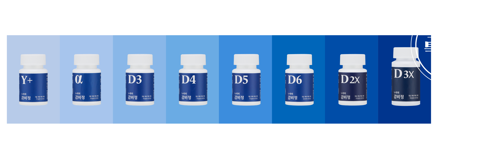
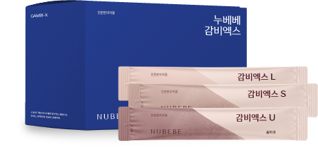

한국기록원 인증
한약 다이어트 1위
누베베 감비정D
한국기록원 인증 5년 누적 최대 한방 비만 치료


#굶지 않고 약 복용으로만
10주
10.5% 감량
[출처] 가미태음조위탕의 체중감량 효과에 영향을 미치는 요인 연구
(17.12 한방비만학회지)
초기 체중 기준, n=139, 평균 BMI 29.94
#힘든 운동 없이
근육은 유지
하고
체지방 위주
로 감량되는
쉬운 다이어트

*초기 근육량 기준
*감량체중 중 체지방 비율
[출처] 2017 원내 연구, n=278, BMI 23이상 감비정 3개월 복용자
국제 저널에서 인정 받은
효과 · 안전성

체중
감소 및 유지
식이섭취량
감소
내장 · 중성지방
증가억제
간, 신장
無독성
콜레스테롤, 지방간
개선

피인용지수 6.529 (20년 기준)
전세계 '약리학 및 약학 분야' 상위 10% 저널
'Biomedicine & Pharmacotherapy'논문 게재!
8단계 처방으로
나에게 딱! 맞는 다이어트
감량목표, 개인의 상태에 따른 맞춤 처방 가능

감량 핵심 성분 기술 특허 7건
감량의 차이
를 만들다
알약 복용이 힘들 땐?
고농축 액상
제제
누베베
감비엑스

처방가능 한의원 찾기